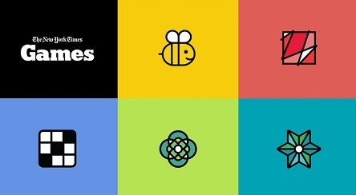
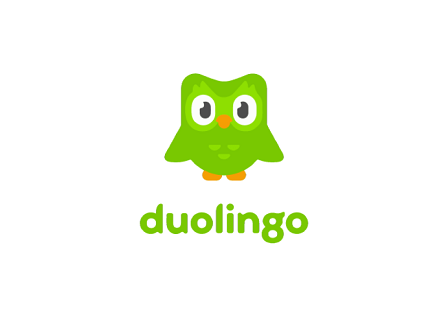
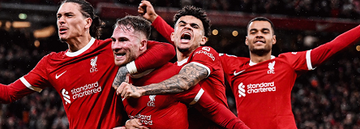
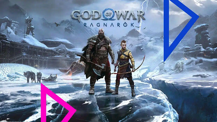
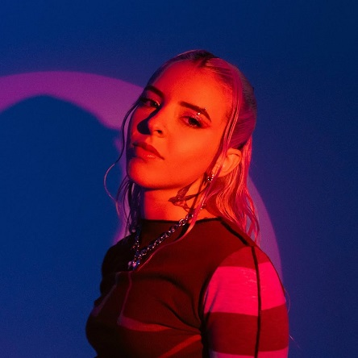

Imagen del programa de edicion "Adobe Premiere Pro".Me gusta editar videos y se me da bien.
-New York Times Games

Imagen de los juegos del "New York Times".Me agradan los juegos como "Wordle", "Strands" o el crucigrama. Me ayudan a mantener mi cerebro activo.
-Duolingo (Racha de 799 días, por ahora)

Imagen de "Duolingo".He aprendido Catalan y un poco de japones gracias a la ayuda de Duolingo.
-Fútbol

Imagen de los jugadores Darwin Nuñez, Alexis MacAllister, Luis Diaz y Cody Gakpo celebrando un gol para el "Liverpool FC".Me encanta el futbol, lo he seguido desde pequeño. Mis equipos favoritos son "Saprissa FC" de mi pais Costa Rica y "Liverpool FC" de Inglaterra.
-Videojuegos

Imagen del juego "God of War Ragnarok".Desde siempre me han fasinado los videojuegos, de este particularmente tengo buenos recuerdos ya que es el primer juego que kogre completar al 100% en cuanto trofeos.
-Música

Imagen de la artista "Young Miko".Mi artista favorita ultimamente, no podria escoger solo una cancion de ella pero si tuviera que hacerlo seria "Tamagotchi".